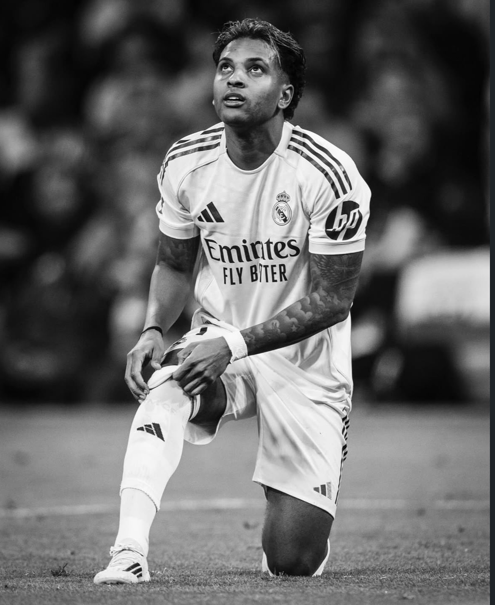

Real Madrid forward Rodrygo has shared an emotional message with fans after suffering a serious knee injury. The Brazilian attacker opened up about the difficult moment and how painful the situation has been for him.
The injury will keep Rodrygo away from football for a long period, meaning he will miss the rest of the season with his club and upcoming international competitions with Brazil.
“It’s one of the worst days of my life… how much I have always feared this injury, so maybe life has been a little cruel to me lately…”.
Despite the disappointment, Rodrygo also reflected on the positive moments he has already experienced in his career.
“I don’t know if I deserve this now, but what can I really complain about? So how many wonderful things have I already lived through… things I also didn’t deserve”.
The Brazilian winger admitted that the injury creates a major obstacle in his career and prevents him from doing what he loves most for some time.
“A big obstacle has appeared in my life, in my career… it’s gonna prevent me from doing what I love most for certain period of time, that’s what happened today”.
Rodrygo also confirmed that he will miss the rest of the season and important international tournaments.
“I’m out for the rest of the season with my club, out of the World Cup with my country, a dream that everyone knows how much it means to me. And all that’s left for me is to be strong as always - this isn’t anything new”.
He also thanked supporters for the support and messages during this difficult time.
“Thank you everyone for the prayers, messages as the affection! You are very important to me… This is a very difficult moment, I promise I won’t stop here, for sure”.
Rodrygo ended his message with determination and faith as he begins his recovery journey.
“I believe I still have many incredible things to live and to bring joy to everyone who believes in me. It’s just a brief pause…”.
“God continues in control of everything”.